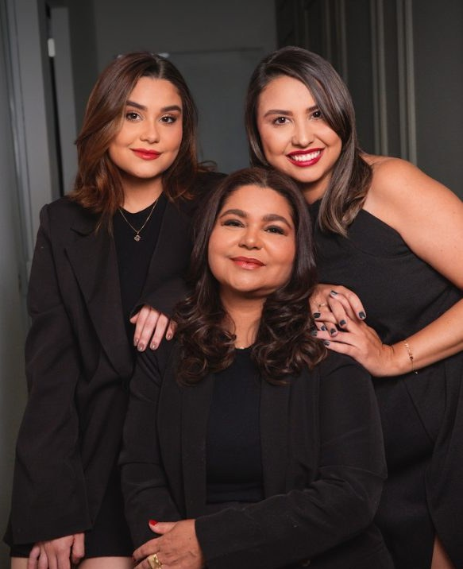
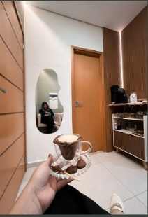

Cuidar, transformar e realizar
Há 27 anos em Bragança Paulista, cuidando de pessoas, histórias e autoestima com tratamentos naturais, personalizados e uma abordagem integrativa de saúde e beleza.
- anos de história
- 27
- nota no Google
- 4,9
- avaliações no Google
- 56
- áreas de cuidado
- 9
Nossa história
Mais do que beleza, criamos conexões e realizamos sonhos.
-
01
O início
A Dalpino Clinic nasceu há 27 anos, quando Jane iniciou sua carreira na área da estética.
-
02
Duas salas, quatro mulheres
Tudo começou com a divisão de duas salas para quatro mulheres, e ali começamos a construir nossa marca do zero, sempre pensando em um futuro promissor para ela.
-
03
Ana
Ana logo se juntou à Jane, realizando trabalhos freelance de maquiagem. Com o tempo, assumiu os atendimentos de sobrancelhas, cílios e lábios, além de gerir a parte administrativa.
-
04
Débora
Mais tarde, Débora, enfermeira com mais de 10 anos de experiência hospitalar, decidiu ingressar na área de enfermagem integrativa com ozonioterapia, e foi então que tudo realmente tomou forma.
-
05
A primeira marca
Criamos nossa primeira logomarca, estruturada por Ana e Júlia, que também faziam parte do marketing e da criação da identidade visual. Em conjunto, escolhemos a água-viva como nosso elemento representativo.
-
06
O “mundo rosa”
Depois de um ano, com tudo pronto, a ideia da marca era transmitir beleza, autocuidado, um mundo rosa e um atendimento diferenciado. Implementamos algo pouco comum na região: um atendimento exclusivo ao cliente, com biscoitos, bolo, café, cappuccino.
-
07
O espaço próprio
Dois anos se passaram e conseguimos idealizar nosso próprio espaço, transmitindo o que nossa marca deseja representar. Foi um caminho longo de um ano para conseguirmos trazer a essência da nossa marca em um único lugar.
-

08Mudamos de conceito
Aprendemos muito nesse período, evoluímos como pessoas e profissionais. Por isso, tomamos a decisão de mudar, não de localização, mas sim de conceito. Percebemos que a marca não estava mais transmitindo o que desejávamos; queríamos algo mais acolhedor e sofisticado, onde todos pudessem se sentir bem acolhidos, com a sensação de estar em casa.
Procedimentos
Estética e saúde no mesmo lugar
Quase tudo começa por uma avaliação. É nela que a equipe entende a sua necessidade e desenha o tratamento.
Assistente virtual
Não sabe qual escolher? Me conta o que te incomoda.
A Dara indica os procedimentos que combinam com o seu caso e te leva para a equipe no WhatsApp.
Não encontramos esse procedimento. Pergunte para nossa assistente ou fale com a equipe no WhatsApp.
A experiência
O cuidado começa antes do procedimento
O atendimento exclusivo nos acompanha desde o começo. Cada visita vem com um ritual próprio da casa.
Os chás da casa
Chá Ana
Canela e chá verde. Um blend autoral pensado para acompanhar o cuidado com o metabolismo e com os fios.
Chá Débora
Um blend autoral pensado para momentos de equilíbrio emocional, ao lado dos tratamentos integrativos.
Chá Jane
Um blend autoral pensado para uma pausa detox, de bem-estar e renovação.
Cinnamoncau
Biscoito exclusivo de canela, cacau e açúcar mascavo, com receita criada por Doces Nadri, para acompanhar chás e cafés.
Delícias exclusivas
- Cappuccino com Nutella, onde tudo começou
- Café expresso
- Água saborizada com óleos essenciais
- Nescau

Quem cuida de você
Três profissionais, uma casa
A Dalpino Clinic é uma clínica de família. Cada uma trouxe uma especialidade e, juntas, construíram a experiência que você encontra aqui.
-
Jane
Fundadora
Começou tudo há 27 anos. Referência em estética na região bragantina, com clientes que a acompanham há mais de duas décadas.
-
Ana
Gestão · Sobrancelhas
Entrou pela maquiagem e hoje conduz os atendimentos de sobrancelhas, cílios e lábios, além de gerir a clínica.
-
Débora
Enfermeira · Integrativa
Enfermeira com mais de 10 anos de experiência hospitalar. Trouxe a enfermagem integrativa e a ozonioterapia para a clínica.
Depoimentos
Quem passa por aqui, volta
4,9 de 5 no Google, em 56 avaliações
“Local extremamente acolhedor, com profissionais altamente qualificadas.”
Angela A. · Google
“Logo na primeira sessão obtive uma grande melhora na dor no tendão.”
Wagner S. · Google
“Eu chego e já me oferecem cappuccino... é um tratamento diferenciado do que estava acostumada.”
Jaqueline F. · Google
“Sou cliente há mais de 20 anos.”
Sandro R. · Google
“Sempre muito bem recebida e me sinto em casa, atendimento excelente.”
Kawane C. · Google
“Atendimento impecável, espaço agradável e os resultados maravilhosos.”
Marcela P. · Google
“Sou cliente da Jane há mais de 15 anos. O atendimento é excelente, profissional e personalizado. O espaço é lindo e acolhedor.”
Tamara N. · Google
“Lugar maravilhoso, fazer procedimento aí é uma experiência única.”
Lara B. · Google
Relatos de clientes publicados no Google. Cada caso é único e começa por uma avaliação.
Sua transformação começa por uma avaliação
É nela que entendemos sua necessidade e montamos o protocolo certo para você. Chame no WhatsApp e escolha o melhor horário.
Agendar pelo WhatsAppHorário
- Segunda a sexta
- 08h às 20h
- Sábado
- 08h às 15h
- Domingo
- Fechado
Dúvidas rápidas
A primeira consulta é uma avaliação?
Na maioria dos tratamentos, sim. Na avaliação a equipe entende o seu caso e indica o protocolo.
Onde fica a Dalpino Clinic?
Na R. Arthur Siqueira, 919, Jardim São José, Bragança Paulista/SP, CEP 12919-000.
Qual é o horário de atendimento?
De segunda a sexta, das 8h às 20h, e aos sábados, das 8h às 15h. Domingo fechado.
Como faço para agendar?
Pelo WhatsApp (11) 93476-4275. As atendentes da clínica confirmam o horário com você.
O site informa os valores dos procedimentos?
Não. Os valores dependem do seu caso e são passados pela equipe na avaliação.
A assistente do site agenda horários?
Não. A Dara ajuda a escolher o procedimento e encaminha você para a equipe no WhatsApp, que faz o agendamento.